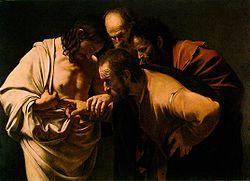

| Апостол Фома Материал из Википедии — свободной энциклопедии |
|  Уверение святого Фомы (картина Караваджо, 1601—1602 годы) |
Фома́ (греч. Θωμάς, лат. Thomas) — один из апостолов
(учеников) Иисуса Христа. Призван
Христом из рыбаков. Его называли «близнецом»: по одной из версий он был внешне похож на Иисуса.
Один из моментов евангельской истории, связанный с Фомой — так называемое «уверение Фомы». Фома не поверил в рассказы о воскресении Иисуса, пока не увидел собственными глазами раны от гвоздей и пробитые копьём рёбра Христа. Выражение «Фома неверующий» (или «неверный») стало нарицательным именем для недоверчивого слушателя. Согласно преданию, основоположник христианства в Индии. Проповедуя в городе Мелиапор (Малипур), расположенном на восточном берегу полуострова Индостан, апостол Фома был обвинён одним языческим жрецом, убившим своего сына, в смерти юноши. Толпа схватила святого Фому, как убийцу, и требовала наказания. Апостол Фома попросил разрешить ему поговорить с убитым. По молитве апостола юноша ожил и свидетельствовал о том, что убийство совершил его отец.[1] После проповеди Евангелия Фома принял мученическую смерть в индийском городе Мелипура — был проткнут пятью кольями. Несмотря на предание, ряд современных историков считают, что христианство в Индию привёз не он, а Фома Канский в 4 в.[2][3] [4] [5] [6] В православии именем Фомы называется восьмой день по Пасхе, приходящийся на воскресенье — Фомина неделя (или Антипасха). В честь Фомы названы остров Сан-Томе и столица государства Сан-Томе и Принсипи город Сан-Томе. |
Примечания1. ↑ Житие и страдание святого апостола Фомы2. ↑ K.S. Latourette, A History of the Expansion of Christianity, 7 vols., London, 1940-49 3. ↑ Edward Gibbon, The Decline and Fall of the Roman Empire, London, 1957 4. ↑ Koenraad Elst, Negationism in India: Concealing the Record of Islam, New Delhi, 1992, 5. ↑ T.R. Vedantham, «St. Thomas Legend» in the South Madras News, Madras, 1987 6. ↑ Ishwar Sharan, The Myth of Saint Thomas and the Mylapore Shiva Temple, New Delhi, 1995 |
ФомаДуччо ди Буонинсенья Маэста. Алтарь сиенского кафедрального собора: Неверие Фомы. 1308-1311 гг.Дуччо ди Буонинсенья Маэста. Алтарь сиенского кафедрального собора: Неверие Фомы. 1308-1311 гг. Фома [греч. Tomгs, от евр. toam, "двойной", "двоякий", "близнец"; по-видимому прозвище (в греч. переводе Didymos, Дидим, т.е. Близнец)], в христианских преданиях один из двенадцати апостолов. Ф. не было с учениками, когда к ним приходил воскресший Иисус Христос (Ио. 20, 24), и он отказывается поверить в воскресение Христа, пока сам не увидит ран от гвоздей и не вложит в них перста (имя "неверного", т.е. "неверующего", Ф. становится нарицательным). . Несколько дней спустя Христос вновь приходит к ученикам и предлагает Ф. прикоснуться к ранам на своём теле (20, 27), укоряя его: "ты поверил, потому что увидел меня, блаженны не видевшие и уверовавшие" (20, 29). Гностическая традиция, обыгрывая образ Ф. как "близнеца" Иисуса Христа, нередко представляет Ф. единственным из апостолов, кто удостоился откровения о тайном смысле учения Христа (см., например, "Евангелие от Ф.", "Книгу Ф. Атлета"). Наряду с другими апокрифами гностического происхождения большой интерес представляют "Деяния Ф.". По преданию, явившийся Ф. в видении Христос велит ему отправиться к индийскому царю Гондоферу, который ищет искусного зодчего для постройки дворца (в христианском искусстве угольник становится атрибутом Ф.). Ф. предоставляет Гондоферу чертежи сказочно прекрасного дворца. Щедро наградив апостола и оставив его надзирать за строительством, царь отбывает; Ф. раздает сокровище нищим и в отсутствие царя занимается проповедью слова божьего. Узнав об этом, Гондофер заключает его в темницу. Но умерший брат царя Гад воскресает в четвёртый день и рассказывает, что ангелы отнесли его в рай и, явив ему великолепную храмину из золота, серебра и самоцветов, которую Ф. воздвиг на небесах для оказавшегося недостойным её царя, сказали, что Гад будет владеть ею, возместив брату деньги, которые тот считает потраченными впустую. Исполнившись раскаяния, царь просит прощения у Ф., который предлагает ему уверовать в Христа и креститься. В северо-западной Индии Ф. навлекает на себя гонение, обратив жену местного царя и побудив её избегать супружеского ложа. Ф. подвергают разнообразным пыткам, но он остаётся невредим. Царь пытается принудить его к идолопоклонству, но Ф. приказывает бесу покинуть кумир и сокрушить его. При виде разбившегося кумира верховный жрец в ярости пронзает Ф. мечом. Христиане с почестями погребают тело (уже в 4 в. одна из монашеских общин в Индии носила имя Ф., а сами индийские христиане называют себя "христианами апостола Ф."). По преданию, в 3 в. император Александр переносит мощи Ф. в город Эдессу, становящийся с этого времени центром почитания апостола; однако его пустая гробница в районе Малабарского побережья остаётся до сих пор важнейшим центром местного христианского культа. Иоанн Златоуст сообщает легенду, согласно которой Ф. посетил страну волхвов, крестил этих мудрых мужей и сделал их столпами веры (крещение волхвов изображено на одной из створок алтаря Фомы Аквинского в церкви Санкт-Юрген, Висмар, 15 в.). По другой версии, апостол проповедовал парфянам, мидийцам и персам и принял мученическую смерть, пронзённый пикой. В 13 в. появляется много изображений Ф. и сцен из его жития (напр., витражи нижней церкви Сан-Франческо в Ассизи, соборов в Бурже, в Шартре и Туре). Наиболее известные среди них - мозаика в Капелла Палатина (Палермо), фрески Буффальмако в Кампо Санто (Пиза) и его же в Санта Мария Донна Реджина (Неаполь), а также пластическая группа Андреа дель Верроккьо и картина X. Хольбейна Старшего. Лит.: Vдth A., Der heilige Thomas, der Apostel Indiens, Aachen, 1925; Klijn A. F. J., The acts of Thomas, Leiden, 1962. O. E. Нестерова http://www.mifinarodov.com/f/foma.html |